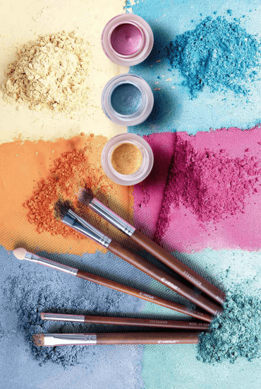
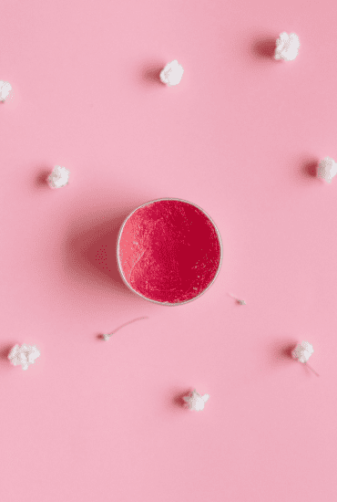

Hi, my name is Salua. In this post I want to share with you the fascinating journey of mixing colors and creating my own color palette with natural pigments for my professional art projects and other products.
For years, I challenged myself, researching how to make a natural paint alternative to acrylic/watercolor for my artistic hobby, focusing on the enchanting realm of earth pigments such as red, yellow and blue ochres. I’ve wanted to paint in the most organic and natural way possible and I finally did it. I’m so happy with the process, it feels quite rewarding to create it and the fact that it’s entirely natural makes the process so meaningful, it reminds me of my pharmacy school era. Therefore, my intention here is to offer an insight into my approach and share with you the valuable lessons learned over the past few years.
Crafting a personal color palette is much easier said than done, there are so many colors to choose from. In my art, I love using earthy colors, I work with plant-based and mineral-based pigments with high lightfastness. Most of my homemade paints are made with natural red, yellow, blue, black and white pigments, and a vehicle (binder). Engaging in color mixing is good if you're looking to achieve a gradual transition, but I'd advise you keep a written formula for your ratios if you plan on making more. Color theory is a necessity for a hobby like this, but I also want to be able to just paint without spending time trying to get the right color. The limitations of a restricted palette also demand that I become more imaginative in the way I use the colours.
Unlike conventional premixed paints, these do not contain fillers (bulking agent), toxic preservatives, heavy metal or petroleum-based pigments, solvents or chemical additives. My paints will last for thousands of years and be 100% lightfast, humidity resistant, and won't off-gas into my home. I can finally paint with confidence knowing my palette is safe and environmentally friendly, and that's called self-love.
Creating art is not just fun to do, a trend, or a lesson in art, but also introduces aspects of history, biology and chemistry. Natural pigments derived from plants and minerals have been used for centuries in art, since the beginning of time, and for good reason. They provide a range of colors that are vibrant and long-lasting, making them ideal for creating beautiful works of art. Vermilion comes from the red cinnabar stone, ochre comes from a yellowish clay, and sienna comes from a dried soil. The ancient Greeks used sulfate stones to create brilliant reds. Each pigment has its own unique properties that help create a realistic and accurate representation of real life.
Plant-based colors
Plants are a common source of natural colors, and many different plant species are used to create a wide range of hues; they are classified into several main groups based on their chemical structure and color. Some examples include:
Red: beetroot powder, red cabbage, hibiscus, rose petals, rose hips, strawberries, alkanet root, madder root, red seaweed, red sandalwood, red poppy powder (aker fassi), pomegranate bark
Orange: paprika, cayenne, chili powder, sweet potato, madder root, carrots, rhubarb root, henna, calendula
Yellow: turmeric powder, saffron, yellow carrots, mustard seed, dandelion, chamomile, safflower, onion skins, marigold flowers, weld, buriti oil
Green: matcha powder, spirulina powder, spinach leaves, nettle
Blue/purple: blueberries, acai berry powder, cornflower, butterfly pea flowers, blue chamomile, blue tansy, indigo, woad, jagua blue
White: chalk, lime, cornstarch, kaolin, arrowroot powder
Black: activated charcoal powder, black tea
Brown: natural soil, cocoa powder, coffee, cinnamon powder, walnut hull
Purples/pinks: red cabbage, beetroot, blackberries, elderberries, hibiscus
Violet: beetroot, chinaberry
Indigo: This blue dye is derived from the leaves of the indigo plant and has been used for centuries to dye fabrics.
Turmeric: This bright yellow spice is also used as a dye and is often used to color food and clothing.
Beetroot: The pigment in beetroot gives a deep red color, commonly used as a natural food coloring.
Henna: This plant is commonly used to dye hair and skin and can also be used to create a range of colors for textiles.
Walnut hulls: Walnut hulls contain ellagitannins, and they can be used to produce a brown ink. The color can be adjusted by varying the concentration and preparation methods.
Pomegranate rinds: The rinds of pomegranates contain ellagitannins and can be used to make ink; they tend to have a brownish color.
Chlorophylls: Responsible for the green color in plants. The main types are chlorophyll-a and chlorophyll-b, which play a central role in photosynthesis, e.g. stinging nettles.
Carotenoids: Contribute to yellow, orange, and red colors in plants. Some examples are beta-carotene (orange), lutein (yellow), and lycopene (red), e.g. carrots, marigolds and annatto seeds (achiote).
Anthocyanins: Impart red, purple, and blue hues to various plant parts. They are water-soluble pigments often found in fruits (berries), flowers, and leaves, e.g. blueberries, blackberries, and red cabbage.
Flavonoids: They encompass a diverse group of pigments, including flavones, flavonols, and flavanones. They contribute to yellow, orange, and red colors, and they have antioxidant properties, e.g. onion skins (quercetin), chamomile flowers (apigenin), and tea (catechins).
Betacyanins: Found in some plants, providing red and violet colors. They are water-soluble nitrogen-containing pigments, distinct from anthocyanins, e.g. beets (beta vulgaris), swiss chard, and certain cacti.
Mineral-based colors
Many minerals are natural sources of color. Earth pigments are naturally occurring minerals, principally iron oxides, that people have used in paints for thousands of years for their natural color to create paints and dyes. These pigments are found in rocks and soils around the world, where different combinations of minerals create vibrant colors that are unique to the regional landscapes. They can be purchased from pottery supply stores (glaze ingredients), online or from specialty retailers. Some examples include:
Ochre: This is a type of clay that can be found in many different colors, including red, yellow, and brown. It has been used for thousands of years to create pigments and dyes.
Malachite: This green mineral was used by ancient Egyptians to create green pigments for painting.
Lapis lazuli is a blue metamorphic rock composed of several minerals, most notably lazurite for its blue color, calcite for white flecks, and pyrite for golden flecks. Valued for thousands of years for its intense blue hue, it's used in jewelry and was historically ground to create the precious pigment ultramarine used by artists in paintings.
Sienna is a form of limonite clay. The pigment was first used in Italy in prehistoric times. The unique color is derived from ferric oxides. The name refers to Sienna, Italy, where the pigment was originally extracted.
Umbers, a clay pigment that contains iron and manganese oxides, the name is said to be derived from the Latin word umbra (shadow) or from the mountainous Italian region of Umbria, where umber was originally extracted.
Spinels are hard crystalline minerals of volcanic source. Pure spinels are colorless, naturally colorful spinels are extremely rare, and are coveted gemstones. Color occurs when spinel is combined with mineral impurities inside a volcano.
Cinnabar: The ancient Chinese used this red mineral to create a vibrant red pigment.
Vermilion is a color family and pigment most often used between antiquity and the 19th century from the powdered mineral cinnabar, a form of mercury sulfide.
Kaolinite: also called kaolin is a clay mineral, a soft, earthy, usually white mineral produced by the chemical weathering of aluminium silicate minerals. Kaolin, which is high in silica and alumina, can be utilized in the production of paint and used as a cheaper alternative to titanium dioxide.
Iron oxides: These red, yellow and black mineral pigments are non-toxic, produce soft natural tones with a matte opaque finish, are UV resistant and are found in rocks and soils around the world.
Titanium dioxide: TiO2 is widely used in modern and contemporary pictorial art to make white pigments or a moderator of hue and saturation. Its excellent hiding power and stability make paintings more durable.
Zinc oxide: ZnO is one of the principal modern white pigments, a product of technological and industrial development, and greatly decreases the amount of yellowing that occurs with aging associated with other white pigments.
Charcoal: Historically, charcoal black has been a staple in the artist's palette, dating back to ancient civilizations. It offers excellent coverage and can be used either as a standalone color, blended with other hues to create a wide range of shades, or mixed with white to produce varying grays. Materials like soot and charcoal are excellent sources of pigments. Soot typically produces a warm black, while charcoal yields a cool black.
Ultramarine blue: Ultramarine is a deep blue pigment which was originally made by grinding lapis lazuli into a powder. It is composed of 90% earthen clay and 10% man-made, non-toxic.
Animal-based colors
Some animals can also be a source of natural color, but I don't use them. For example:
Cochineal: This red dye is made from the bodies of cochineal insects and has been used for centuries to dye textiles and food.
Sepia: This brown pigment is derived from the ink sacs of cuttlefish and has been used for drawing and painting for hundreds of years.
Tyrian purple: This purple dye was made from the glands of sea snails and was used by the ancient Phoenicians to dye fabric.
A little bit about binders and making paint
I love making my own paints by mixing the pigments and binders of my choice. Color theory is both science and art, however, not all pigments and binders have the same properties, while not all paints can be made in the same way, since some pigments are suitable for color mixing while others need to be ground. When you use plate-like pigments such as earth pigments, you need to crush them into powder by grinding. It is easier to use a pestle and a mortar for making a large volume of paint.
Watercolors, acrylics and oil paints are a mixture of pigments (colorant) and mediums (binder). Pigments do not adhere to paper or canvas by just mixing with water. They become the paints by kneading well with painting mediums until their particles spread out and are coated with the mediums to gain adhesion. Kneading well is a key to making paint in good quality, no matter which binder is used. The more they are kneaded, the paints turn out shinier, smoother and more saturated. And let’s not forget the solubility of each pigment.
Gum Arabic in watercolours and gouache, is the perfect binder/vehicle for many paint recipes, and is a highly water-soluble natural resin extracted from the bark of acacia trees. This binder must be made at least one day in advance to provide sufficient time for the gum to dissolve. The ratio of binder to pigment needed will change depending on each specific pigment but 1:1 is a good place to start. Watercolor paints retain their water solubility even after being dried and can be revived as paints when moistened even after solidification. Because of this unique property, dried watercolor paints may bleed again and be mixed with the other layers depending on the substrates and how they are rendered, so this type of paint needs to be layered carefully.
Adding honey, although commercial paints often contain glycerin, honey is more commonly used in classic methods. You can make watercolors with only pigments and gum arabic, but adding honey to the mixture will give them a nice sheen and softness. If the total amount of pigment is about 5 to 6 heaping dispensing spoons, 2 to 3 drops of honey are enough. Be careful not to add too much, as it will make the paint sticky and hard to dry.
Drying oils are natural binders to make oil paint, the most common used in oil painting are poppy oil, linseed oil, safflower oil, walnut oil, etc. There are two types of oil, one is drying oil that solidifies and another one is non-drying which is never dried. Oil paints are made with vegetable-based drying oils that oxidize to form a hard film when exposed to air. Another key characteristic of oil paints is their plasticity, which allows paints to keep the marks left by a painting knife and a brush. While watercolors evaporate and dry, oil paints do not have elements that evaporate and solidify without any volume change. When painting with them, it would be better to use solvents such as volatile oils for thinning paints and additives that faster drying time. There are various types of drying oils and oil mediums with different characteristics.
Tempera is the name given to colours which are bound with an emulsion (a mixture of substances, some soluble and some insoluble in water) and stabilized with an emulsifying agent such as an egg or casein glue. Tempera can be made with a variety of emulsions: egg alone, egg and oil, gum emulsions, wax emulsions, even oil alone.
Acrylic resins, invented in the 1950s, are a fundamental part of acrylic paints, acting as the binder that holds the pigments together and allows them to adhere to various surfaces. They are a water-based plastic polymer resin, a non-toxic material that offers a quick-drying alternative to oil paints.
Chinese ink (better known under the English misnomer: Indian ink) is made of lamp black pigment ground in water with a little shellac dissolved in alcohol to make it water resistant and lacquer like.
Shellac is a resin-like secretion of a louse, the Coccus lacca, that lives symbiotically on trees in India and other parts of Asia. Shellac can only be dissolved in water if the water is alkaline and after drying it is indelible for ordinary tap water. Shellac is most often used in artwork as a sealing finish on wood or other porous substrates that will later be painted over. It can also be used as an isolating film between layers of paint, both oil and water-based. Dissolved in alkali and water, shellac can be used in watercolor painting as a fixative.
Wax or beeswax (mineral or natural) is also a binding medium in oil sticks, oil pastels, pencils and crayons. Beeswax is probably the oldest known pigment binder, and the technique of Encaustic painting goes back to the Ancient Greeks where beeswax, resin and pigments were used to paint warships.
Glue or animal glue has been used since ancient times as a pigment binder for paints and artworks that need long-term preservation.
Turpentine is one of the most commonly used solvents in oil paint, it usually decreases paint’s drying time and can reactivate dried paint. A solvent is needed to dissolve or dilute the binder. For aqueous binders, water is the solvent; for oils, resins or waxes, non-aqueous solvents such as turpentine oil are necessary. Those who don’t know what a solvent is should familiarize themselves with the medium, also known as paint thinner, a solvent is what you mix with your pigment to create your paint’s texture and opacity. How much of this you add to your mixture will ultimately impact these factors. Mineral spirits are less toxic than turpentine, but they also cost more. With a small amount, you get much more out of mineral spirits, and they aren’t as odorous as other options, such as acetone. While unpleasant to the nose, acetone is inexpensive and the least toxic of these three options.
Cornstarch as a binder is perfect for artists and amateurs for creating cheaper watercolor paints.
Paint binders are film-forming mediums that, when combined with dry pigments, can be applied to substrates for painting. The type and quantity of binder used in the paint impacts performance factors, such as durability, stain-resistance, adhesion, and resistance to cracking.
To use homemade paints as soon as they are done, you should be fine. If you want to preserve them, you might have to really document each paint and pigment you are using, some pigments need stabilizers and temperas rot in a few days for example!
The magic of color mixing
One of my favorite things to do is to mix, test, practice and use colors, using a palette, layering, creating shades and tints, working with transparent and opaque colors, etc. I mix colors only with their immediate neighbors or white. A fundamental scheme is to paint darks with umber, mid tones with sienna, and lights with yellow. Of course, this must be modified depending on the color of what is being painted. I like to paint in natural light whenever possible or outdoors, artificial lighting can distort colors.
Color mixing is about understanding the relationship between colors, knowing that blue and yellow make green, or that red and blue create purple. However, when working with natural colourants and pigments, this process becomes both an art and a science.
Natural primary colors are: red, yellow, blue. Mixing these primary colors we get secondary colors: Green: blue + yellow. Orange: yellow + red. Purple: red + blue. Tertiary colors are formed by mixing a primary color with a secondary color, resulting in shades like yellow-orange, blue-green, and red-violet. Complementary colors are opposite each other on the color wheel (e.g., red and green), using them together can create vibrancy and drama. The trick lies in the proportions and the specific shade of each primary color you start with.
What colors make brown?
Make brown with me. To create a brown paint, I mix complementary colors or use primary colors in specific combinations. Browns are always based on red, orange, or yellow (or some blend of these). Depending on how saturated of a brown I'd like to achieve, I just add a small amount of black or gray (gray being a combination of black and white). The black will leave the color intensity of the red, orange, or yellow a pure but darker shade, whereas the gray will turn the brown into a less-saturated tone of the original, and potentially lighter, darker, or remain the same tone. If adding gray, the tone of the gray (a result of the ratio of black versus white) will determine how quickly the original pure tone becomes desaturated and/or lightened or darkened.
Basic brown mixing:
Complementary colors: equal parts of two complementary colors, for example: blue and orange, red and green, yellow and purple.
Primary colors: I combine primary colors to make brown: I mix red and yellow to create orange, then add a bit of blue or black to darken it.
Variations of brown:
To obtain different shades and tones of brown, I adjust the mix with other colors or by changing the ratios:
Adding white: To lighten brown, I mix in white to create a tan or beige.
Adding black: To darken brown, I add a small amount of black for a richer, deeper shade.
Adding yellow or red: For a warmer brown, I add more yellow or red. This can give shades like ochre or rust.
Adding blue or green: For cooler tones, I incorporate blue or green. This can create earthy tones like olive or slate brown.
Experimenting with ratios: More red will yield a warmer brown, while more blue will give a cooler effect.
Example recipes:
Warm brown: 3 parts red, 2 parts yellow, and 1 part blue.
Cool brown: equal parts blue and orange (or red and green).
Light brown: 1 part brown and 1 part white.
Other examples:
Green: 1 part ultramarine blue / 4 parts yellow oxide
Blue: 3 parts ultramarine blue / 1 part yellow oxide
Purple: 1 part ultramarine blue / 1 part brick red oxide
Maroon: 5 parts brick red oxide / 2 parts ultramarine blue
Orange: 2 parts brick red oxide / 4 parts yellow oxide
Once I find color powder combos that I like, I can make bigger batches of them and keep them in bottles already mixed and ready to go.
Whether you're decorating cakes, experimenting with homemade beauty products, or even engaging in arts and crafts like I do, these natural colours offer a safe, healthy and fun way to express your creativity, connecting art to our precious planet.
Natural pigments for my homemade beauty products
In an era of heightened consciousness about our skincare and makeup ingredients, there’s a growing fascination with natural alternatives. One of these abundant sources lies in the heart of nature: natural pigments from plants and minerals. These vibrant compounds offer a captivating blend of colour and skincare benefits. I recently started making homemade beauty products with my sister Jiji for fun, self-love, and to be part of the unstoppable movement of natural beauty, which can be both rewarding and beneficial in many ways. I love it.


When you want to add a bit of colour to something, there’s a lot to consider, what colour do you want? Do you want opacity along with the colour? How long do you want the colour to last? What is the end use of the product? And let’s not forget the all-important solubility of each ingredient, the main ones we’re concerned with are: water soluble (water, some botanical extracts), oil soluble (oils, butters, essential oils) and insoluble (clays, micas, oxides).
Natural pigments are derived from botanical sources, minerals, clays and other organic materials, each imparting unique hues to beauty products. Unlike synthetic dyes that may contain harmful chemicals, these offer a safer and more sustainable option.
There’s nothing quite like the joy of giving a friend a handmade lip balm that becomes their all-time favourite, or creating a lotion that works better than anything you’ve ever bought at the store and for a fraction of the cost. I’d love to introduce you to that joy!
Here's an overview on the different types of pigments and ingredients that I use in my homemade beauty products, why I choose them, and what they’re best suited for, based very much on my personal experience. They have other uses too!
Clays
Solubility: Insoluble
Colours available: More natural shades of brown, beige, green, pink, red, and white
Will they oxidize or fade? Not in my experience
Potency: Depends on the clay, but generally somewhere below oxides and above botanicals
I love clay, and I’ll add it to pretty much anything if given the opportunity for slip (in soap), cosmetics and colour. There are a lot of different clays out there, but when we’re talking clay for colour we’re usually talking about Australian and French clays, they’re available in a variety of muted tones, and smooth and light, making them innocuous additions to many things. Grittier clays like bentonite or ghassoul are generally not good clays to use as colourants unless you’re looking for something brown/grey and scrubby.
When I use clays in powders I find I always have to supplement the colour with oxides to get the colour concentration required, even if the clay used is an excellent match for the colour I want, once it’s been mixed with other ingredients it’s just not strong enough to hold its own.
Oxides
Solubility: Insoluble, dispersible
Colours available: Natural shades of brown, green, teal, black, red, green, and yellow
Will they oxidize or fade? No
Potency: Very potent, even in small amounts
Iron oxides are a fantastic arrow in your colour quiver, they are potent, consistent, insoluble, smooth, light, inexpensive, and reliable. They don’t fade over time, and they pack a serious colour punch in tiny amounts. I use oxides in a lot of cosmetic recipes, they can be added to finished formulas that need just a hint of colour without affecting the final product.
Iron oxides are mainly used in skincare and cosmetic products for their pigments, as they provide a wide range of colors, including yellow, red, brown, and black. They are often essential in formulas for foundations, concealers and tinted moisturizers, helping create skin-matching shades while offering long-lasting coverage for skin imperfections, they are non-comedogenic, and when used in combination with sun-blocking ingredients like titanium dioxide and zinc oxide, they provide enhanced protection against sunburn.
The potency of oxides simply cannot be replaced in cosmetics. For anything that contains titanium dioxide, zinc oxide, and/or sericite mica, you need the potency of oxides to get yourself a final product that isn’t mostly white. They're especially helpful for reducing the white cast often left by mineral sunscreens. The range of colors available from iron oxides allows for a wide variety of skin-matching shades, making them invaluable in the cosmetics industry.
The stability of oxides is also a must-have, as I don’t know anybody who likes discovering their carefully colour-matched concealer is a completely different colour a week or so after making it. And because oxides are the same colour every time you buy a jar, you can rest assured that your carefully blended colour formulations will hold true over time.
Ultramarines
Solubility: Insoluble
Colours available: Vibrant shades like cobalt blue and bright lavender
Will they oxidize or fade? No
Potency: Very potent, even in small amounts
Ultramarines are pretty much the same as oxides when it comes to how we use them, they are just synthesized from different ingredients. The blue is the synthetic version of lapis lazuli, a very expensive semi-precious stone from Afghanistan that used to be our sole source of bright blue pigment. We figured out how to synthesize it in the early 1820’s, and now ultramarines are synthesized from ingredients like sulfur, clay, and charcoal. The bright blue pigment is irreplaceable (without using FD&C dyes) and is fantastic in blends with carmine to create beautiful purple hues.
Micas
Solubility: Insoluble, dispersible
Colours available: All the colours of the rainbow
Will they oxidize or fade? No
Potency: Fairly low
Micas are fine, shimmery powders that pack a strong sparkly punch. They’re available in all the colours of the rainbow because they are coloured with oxides and FD&C dyes, so not all micas are all that natural (check the INCI of each colour/variety to see how it is pigmented). I find micas offer a strong colour punch to the appearance of a product, like a tube of lip balm, but the colour isn’t strong enough to make much of a difference on the skin. I’ll usually pair them with some iron oxides if I want a strong colour to come through in the end product.
Dyes & liquid oils
Solubility: Varies
Colours available: Varies, depending on how natural you want to keep things
Will they oxidize or fade? Varies
Potency: Varies
This is a category with a lot of variation.
If you’re ok with FD&C dyes you can get any colour of the rainbow and it’ll last forever. I’ve worked with a couple of the powdered FD&C dyes, and they work very much like iron oxides do. They’re insoluble, highly potent, and generally much brighter, an FD&C yellow will be a true, bright yellow while yellow iron oxide is browner and muddier. If you like super vibrant colours, they work really well.
For oils, the colours you’ll come across most often are greens and oranges. Raw hemp seed oil is quite green and will lend a green tint to lotions and body butters, but it isn’t strong enough to colour the skin. Buriti oil and sea buckthorn are two orange oils, with buriti being the strongest of the two. Buriti is so orange that it’s almost impossible to use as anything but a colourant–straight application to the skin will make you look like a pumpkin quite promptly. Sea Buckthorn oil varies in strength (the berry oil is more potent than the seed oil), and can vary from giving an orange tint to balms and soaps to giving you an orange tint.
Carmine
Solubility: Water soluble, oil dispersible
Colours available: Bright, vibrant red/pink
Will it oxidize or fade? No
Potency: Extremely strong
Carmine is amazing and completely irreplaceable in the natural world (FD&C Red No 7 is a fairly close colour match, but it is insoluble so you cannot use it anywhere we need carmine’s water solubility). It’s a bright pink/red and packs an exceptionally potent punch. Just a small amount of the powdered stuff mixed with some water and glycerin gives you an unbeatable lip and cheek stain. A few drops of the liquid dye gives you a beautiful tinted lip balm, and more can be added for a stronger tint. It is quite pricey by the gram, but it’s much lighter than the oxides, so in the end it’s not quite as awful as you get a larger volume for the price.
Now, carmine is not vegan, it’s made from the cochineal insect. If you’re vegan and/or grossed out by this (or can’t afford it), I’m afraid I can’t really offer you a natural alternative. In tinted lip balms you can use a bit of red iron oxide instead, but the colour won’t be quite as vibrant. I’m afraid you are out of luck for water soluble alternatives, though.
Botanicals (e.g. beet root powder, rose hip extract, red poppy powder (aker fassi), etc.)
Solubility: Water soluble
Colours available: Natural shades of red, pink, beige, brown, green, etc.
Will they oxidize or fade? Yes
Potency: Low
The natural pigments found in the botanical world are the result of complex chemical processes occurring within plants. These compounds, often belonging to the flavonoid family, are responsible for the vibrant hues we associate with nature. Understanding the chemistry behind these pigments is crucial for harnessing their potential in makeup formulas.
Incorporating them into modern makeup formulations presents a unique set of challenges, they’re water soluble, but once mixed with water they oxidize quite rapidly, they’re also not very potent, meaning you can’t use them in anything that contains ingredients like titanium dioxide or sericite mica. In soap they tend to shift colour during saponification, generally turning brown or black. One of my main uses for botanicals is to dye my hair with chamomile or henna and make a toner mist with distilled rose water. Other uses I’ve found for botanicals as a colourant is in bath salts/ bath bombs as they’ll colour the dry product and then dissolve into nothing in the tub. You can also infuse them into oils and then strain out the solids.
This will give you a nicely coloured oil (makes for nice tinted lip balms) that has fairly low colour transfer to the skin. Be careful with the transfer of aromas and flavours! I’d also recommend keeping these infused oils in formulations that don’t use any water to avoid oxidation.
My latest diy treatment and skin cream recipe:
After sugaring, I make a homemade methylene blue cream by mixing coconut oil, castor oil, 3 drops of 2% MB with vitamin C and maybe hyaluronic acid or witch hazel. The cream is light blue and doesn't stain the skin. There you have your anti-aging cream for much less.
Optional: Shea butter, soy wax or beeswax, olivem 1000, zinc oxide, distilled water or rose hydrolate, xanthan gum, glycerin, aloe vera, cosgard, vitamin E, essential oils.
Popular natural colorants in beauty products
The world of natural colorants in beauty products encompasses a variety of botanical sources, minerals, and organic materials. These natural pigments not only cater to the growing demand for clean and eco-friendly formulations but also add a touch of authenticity to homemade and professional beauty products. Over the centuries, the art of using plant pigments evolved, with different cultures developing their own unique techniques. While mineral pigments eventually gained prominence in the 20th century, today, plant pigments are experiencing a renaissance as consumers seek natural, more sustainable beauty options. Let’s explore some of the popular natural colorants that have become staples in the formulation of cosmetics and skincare, and that I love so much:
Indigo: This blue dye is derived from the leaves of the indigo plant and has been used for centuries to dye fabrics and to dye hair in combination with Henna.
Henna: This plant is commonly used to dye hair and skin and can also be used to create a range of colors for textiles.
Chamomile: Yellow camomile is the perfect ingredient to lighten blonde hair naturally and add golden highlights to light brown hair. Its scientific name tinctoria comes from its use as a dye. The inflorescence of this plant, which contains two flavonoid derivatives, luteolin and apigenin, was once used in the textile industry to produce a bright yellow dye.
Red poppy powder: Also known as Aker Fassi or Gazelle Blood, is a natural red pigment and beauty ingredient that Moroccan women have used for centuries in skin and hair care rituals. It is a fine powder made from the dried petals of the red poppy flower (Papaver rhoeas) and pomegranate bark, which grows in the Atlas Mountains, and is often used as a natural alternative to chemical beauty products. Women use it to make lip stains, blush, and other makeup products. It is also used as a natural hair and skin dye, as well as a facial cleanser, exfoliant or face mask. Added to rose water hydrosol, it gives a rosy tone to the skin and radiance. Mixed with ghassoul and rose water in a mask, it treats oily skin. Added to henna, it helps accentuate red highlights and make hair softer. Added to black soap (beldi), it helps exfoliate the skin of impurities and give freshness.
Beetroot extract: Derived from the humble beetroot, this natural colorant imparts a beautiful range of pink and red hues to beauty products. Its versatility allows formulators to create lipsticks, blushes, and even tinted moisturizers with a subtle yet captivating tint. Beyond its aesthetic contribution, beetroot extract contains antioxidants that offer potential skincare benefits.
Turmeric: Renowned for its potent anti-inflammatory properties, turmeric also serves as a natural colorant, providing a warm and golden yellow tone to beauty formulations. This ancient spice has found its way into skincare products, contributing not only to their visual appeal but also offering potential anti-aging and skin-soothing benefits.
Jagua blue: This blue pigment has gained popularity not only as a natural colorant but also for its unique shade in beauty products. Jagua blue lends a vibrant blue hue, making it ideal for products like face masks and cleansers. Beyond its color contribution, Jagua blue is rich in nutrients and antioxidants, adding a nourishing element to skincare formulations.
Hibiscus: Known for its vibrant and captivating flowers, hibiscus is a natural colorant that imparts a range of pink and red shades to beauty products. Its inclusion in formulations adds a touch of floral elegance while potentially offering astringent and exfoliating properties, making it a valuable addition to skincare regimen.
Activated charcoal: Derived from natural sources such as coconut shells, activated charcoal is a powerful natural colorant that creates striking black or gray tones in beauty products. Beyond its aesthetic impact, activated charcoal is renowned for its ability to absorb impurities, making it a popular choice in facial cleansers, masks, and even mascaras.
Chlorophyll: Harnessing the green pigment found in plants, chlorophyll serves as a natural colorant that imparts a fresh and lively green hue to beauty formulations. Its inclusion is not only visually appealing but also aligns with the trend towards botanical-infused products, promoting a connection to nature in skincare and cosmetic routines.
Salua
ALL POSTS